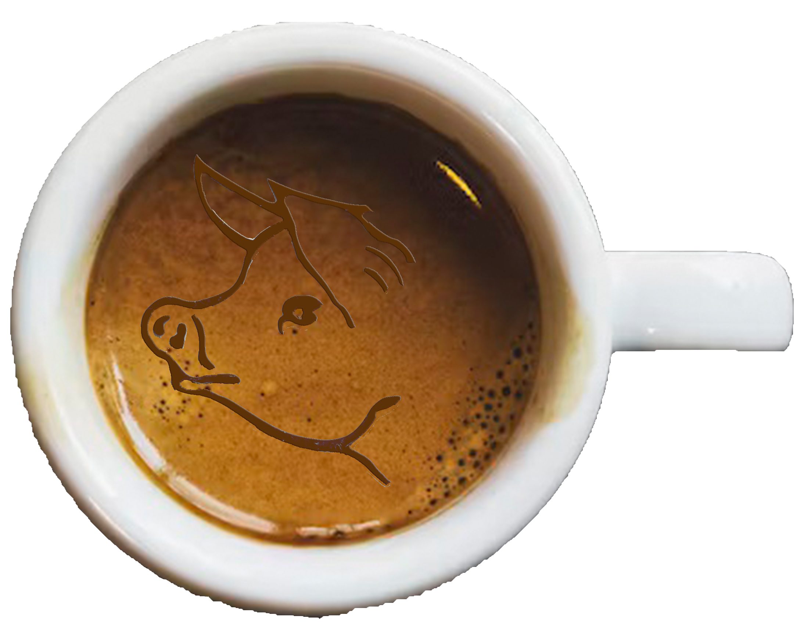
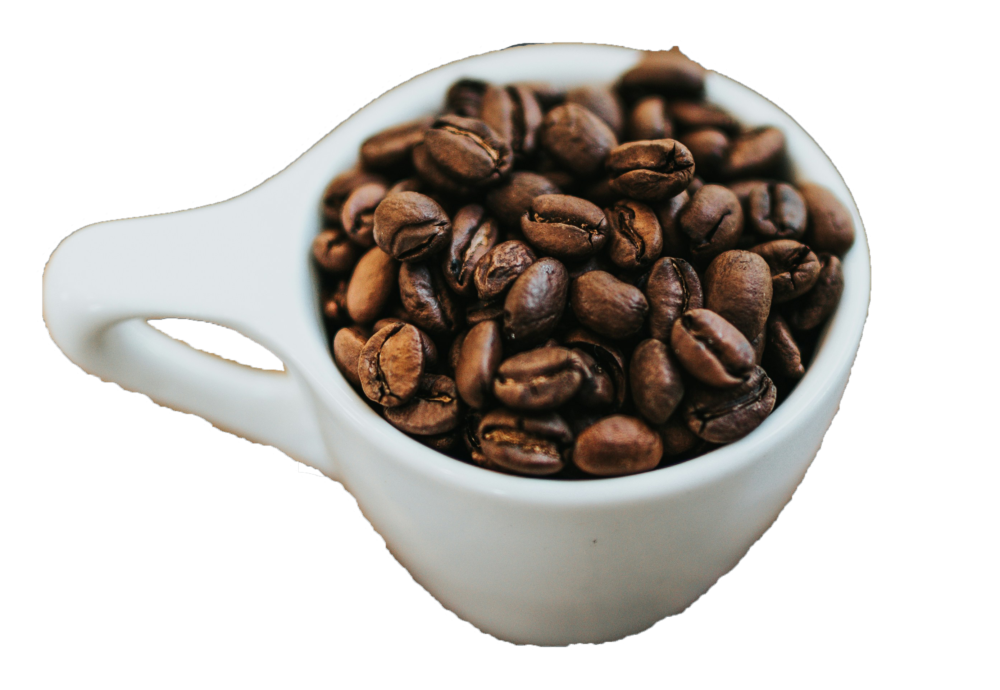

The Sleepy Hog Cafe

Welcome to Sleepy Hog Café, your cozy escape in the heart of Manchester!
Here, we believe that every cup of coffee should be a delightful experience.
Our passion for quality drives us to source the finest beans, meticulously roasted to bring out their rich flavors.
Whether you're in need of a morning pick-me-up or a leisurely afternoon treat, our inviting atmosphere and freshly baked
pastries make the perfect pairing.
About Us
At Sleepy Hog Café, we’re more than just a coffee shop—we’re a family. Founded by Brewster Finch and Cora Brewton, our
journey began with a shared love for coffee and a dream of creating a welcoming space where everyone could feel at home. Inspired
by our favorite cozy hideaways, we set out to craft a menu that features not only the finest, ethically sourced beans but also delicious
pastries made with love. Every day, we pour our hearts into each cup, ensuring that every sip feels like a warm embrace. We cherish the
connections we build with our customers and the stories shared over coffee. Join us at Sleepy Hog Café, where we celebrate the simple joys
of life, one delightful cup at a time!
Why We're So Committed

At Sleepy Hog Café, our commitment to quality and community runs deep. We source our coffee beans from sustainable farms,
ensuring that every cup not only tastes exceptional but also supports fair trade practices. Our skilled baristas are passionate about their craft,
constantly honing their techniques to deliver the perfect brew every time. Beyond coffee, we strive to create a welcoming atmosphere where everyone
feels at home. From our locally baked pastries to our community events, we believe in fostering connections and celebrating the joy of togetherness.
At Sleepy Hog Café, we’re dedicated to providing you with an experience that warms your heart as much as your cup!
Come on in and let us awaken your senses!
Join us at Sleepy Hog Café, where great coffee, friendly smiles, and a warm ambiance come
together to create your new favorite spot to relax and recharge.